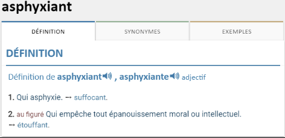
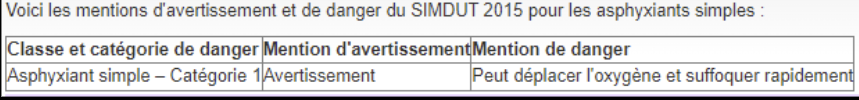
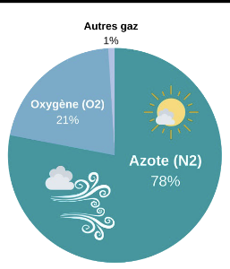
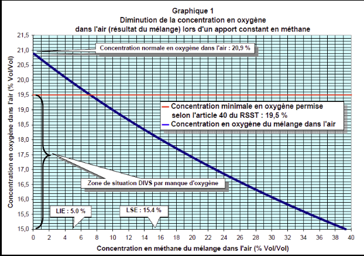
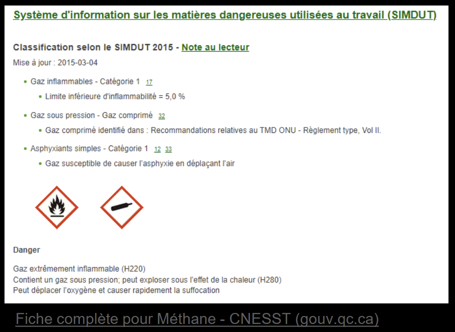
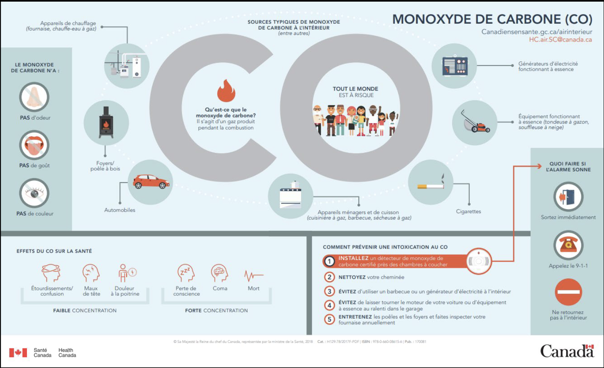
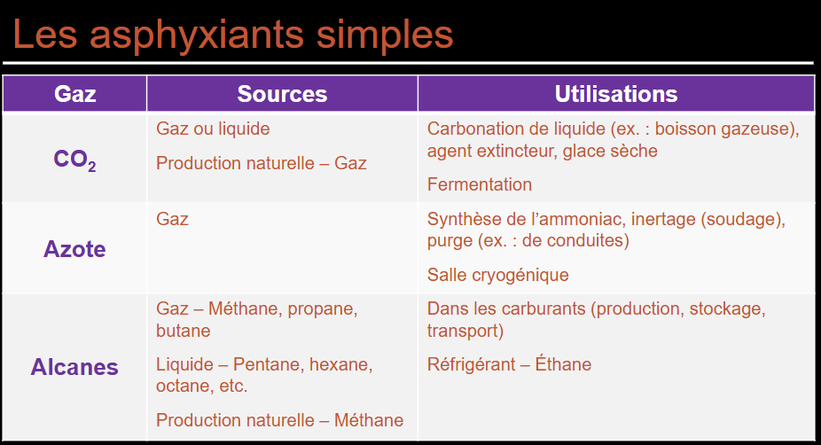

Asphyxiants simples et chimiques
Un asphyxiant simple déplace l'oxygène de l'air sans autre effet propre ; un asphyxiant chimique (biochimique) empêche le transport ou l'utilisation de l'O2 même à concentration d'O2 normale. En mine, c'est une des familles les plus létales : CO post-tir, H2S dans les sulfures, CH4 (grisou) et N2 d'inertage figurent parmi les causes d'accidents graves en souterrain.
Table des matières
- Définitions et classification SIMDUT
- Asphyxiants simples
- Effets selon le pourcentage d'O2
- Asphyxiants chimiques
- Application terrain
- Ressources
Définitions et classification SIMDUT
- Hypoxie : diminution de la quantité d'oxygène disponible.
- Anoxie : absence d'oxygène.
- Asphyxiant simple : gaz qui ne provoque pas d'autre effet sur l'organisme que la privation d'O2 par dilution.
- Asphyxiant chimique (biochimique) : empêche le transport et/ou l'utilisation cellulaire de l'O2.

Toucher l'image pour l'agrandirSIMDUT 2015 : classe « Asphyxiants simples » catégorie 1. Aucun pictogramme attribué (pas dans le SGH original, mais maintenu au Canada). Mention typique : « Peut déplacer l'oxygène et causer rapidement la suffocation ». Voir SIMDUT et classes de danger.

Toucher l'image pour l'agrandirAsphyxiants simples
L'air contient normalement 20,9 % d'O2, 78,1 % N2, ~1 % Ar et autres.

Toucher l'image pour l'agrandirUn asphyxiant simple déplace tous les constituants de l'air proportionnellement.

Toucher l'image pour l'agrandir| Gaz | Source typique | Particularité |
|---|---|---|
| Azote (N2) | Inertage, gaz comprimés, mines | Le plus courant en industrie ; inodore |
| Méthane (CH4) | Mines (grisou), digestion biologique, gaz naturel | Aussi inflammable (LIE 5 %) |
| Dioxyde de carbone (CO2)* | Fermentation, neige carbonique, incendie | À forte conc. devient aussi asphyxiant chimique (acidose) |
| Argon, hélium, néon | Soudage, ballons | Inodores |
| Propane, butane | Combustibles | Aussi inflammables |
| Hydrogène | Industrie chimique, batteries | Aussi inflammable |
| Acétylène | Soudage, découpe | Aussi inflammable |
*Le CO2 est considéré asphyxiant simple à faibles concentrations puis chimique à très forte conc.
Danger spécifique
- Inodores pour la plupart : perte de conscience sans signe avant-coureur.
- Dangers majeurs en espaces clos. Voir Entrer dans un espace clos en sécurité.
- Sentinelle : si un travailleur s'effondre, ne pas entrer sans Protection respiratoire (APR) et plan de sauvetage. Nombreux décès de sauveteurs improvisés.
Calcul du déplacement et plage d'explosibilité
Si 5 % de méthane est présent : l'O2 passe de 20,9 % à 20,9 % × 0,95 = 19,8 % (réduction de 1,05 %). Donc une chute d'O2 à 18 % indique ~14 % CH4 (140 000 ppm), donc bien au-delà de la LIE (5 %). Conclusion : danger d'explosion prioritaire avant l'asphyxie.

Toucher l'image pour l'agrandirEffets selon le pourcentage d'O2
| % O2 | Effets |
|---|---|
| 20,9 % | Normal |
| 19,5 % | Seuil min. acceptable au travail (RSST, espace clos) |
| 16-12 % | ↑ fréquence respiratoire et cardiaque, euphorie, céphalée, incoordination légère, hypocapnie |
| 14-10 % | Altération du jugement, cyanose, incoordination modérée |
| 10-6 % | Léthargie, incoordination sévère, sensation de manque d'air |
| < 6 % | Mort, coma, convulsions, respiration agonisante |
Symptômes accélérés avec l'effort.
Asphyxiants chimiques
Causent une hypoxie tissulaire même avec O2 normal dans l'air en perturbant le transport ou l'utilisation cellulaire. Voir Neurotoxicité, hématotoxicité et toxicité endocrinienne pour le détail des mécanismes systémiques.
Monoxyde de carbone (CO)

Toucher l'image pour l'agrandir| Caractéristique | Détail |
|---|---|
| Source | Combustion incomplète (moteurs, chauffage, soudage, sautage minier) |
| Mécanisme | Affinité Hb 250x > O2 → carboxyhémoglobine (HbCO) ; bloque cytochrome oxydase ; déplace la courbe de dissociation de Hb |
| Détection | Inodore, incolore, insipide. Détecteur électrochimique obligatoire |
| Symptômes (selon HbCO %) | < 10 % asymptomatique ; 10-20 % céphalée, fatigue ; 20-40 % nausées, vertiges ; 40-60 % confusion, coma ; > 60 % mort |
| Traitement | Retirer de la zone, O2 100 %, oxygénothérapie hyperbare si grave |
| VEMP Qc | 35 ppm (25 ppm ACGIH 2022) ; VECD 200 ppm (voir VEA et normes RSST) |
INSPQ : plusieurs décès par an au Québec (laveuses à pression à essence en garage, chauffage d'appoint propane). Cas typique minier : post-sautage avec ventilation insuffisante.
Sulfure d'hydrogène (H2S)

Toucher l'image pour l'agrandir| Caractéristique | Détail |
|---|---|
| Source | Pourriture matière organique, mines, pétrole/gaz, fosses à lisier, eaux usées |
| Mécanisme | Inhibe cytochrome c oxydase (blocage respiration cellulaire) ; aussi irritant respiratoire (voir Toxicité du système respiratoire) |
| Odeur | Œufs pourris à basse conc. ; paralysie olfactive > 100 ppm (perception disparaît au moment du danger) |
| Symptômes | < 10 ppm irritation ; 100-200 ppm paralysie olfactive ; 500 ppm œdème pulm., perte conscience ; > 1000 ppm mort « foudroyante » (knock-down) |
| VEMP Qc | 10 ppm ; VECD 15 ppm |
Cyanures (HCN, NaCN, KCN)
- Source : galvanoplastie, extraction de l'or (cyanuration), combustion de polyuréthane.
- Mécanisme : inhibe cytochrome c oxydase comme H2S.
- Antidote : nitrites + thiosulfate ; hydroxocobalamine.
Arsine (AsH3)
- Source : réaction d'acides sur Métaux toxiques en milieu de travail contenant arsenic ; production semi-conducteurs. Voir Métaux toxiques en milieu de travail.
- Mécanisme : hémolyse massive des globules rouges (atteinte hématologique, pas seulement asphyxie).
- Insidieux : symptômes retardés.
Autres
- Acide cyanhydrique (HCN gazeux) : combustion de PU/laine ; très toxique aigu.
- Phosgène (COCl2) : guerre chimique, sous-produit thermique de solvants chlorés. Œdème pulmonaire retardé.
- Méthémoglobinisants : nitrites, nitrates, aniline, nitrobenzène (Fe2+ → Fe3+).
Application terrain
Le souterrain concentre les risques d'asphyxie
| Gaz | Source minière | Mesure clé |
|---|---|---|
| CO | Sautage récent, engins diesel, moteurs à essence (laveuses à pression) | Délai de réentrée, ventilation principale, détecteur CO portatif |
| NO2 | Sautage (mélange ANFO) | Délai de réentrée, dilution par ventilation primaire |
| H2S | Sulfures (pyrite, pyrrhotite) frappés au forage ou au sautage | Détecteur H2S portatif, alerte rapide d'évacuation |
| CH4 | Charbon, certains gisements (grisou) | Détection LIE en continu, ventilation, interdiction d'étincelle |
| N2 | Inertage de réservoirs, certains essais | Permis d'entrée, ventilation forcée, attestation O2 ≥ 19,5 % |
| Cyanures (HCN) | Usine d'or à cyanuration, fuite procédé | Détection, douches d'urgence, antidote sur site |
| Arsine (AsH3) | Acide attaquant minerai arsénifère (incident) | Procédure, EPI, plan d'urgence |
Le détecteur multigaz (O2, CO, H2S, LEL) est obligatoire pour entrer en espace clos ou en zone à risque. Voir Entrer dans un espace clos en sécurité pour le permis d'entrée et la fonction sentinelle.
Rappel critique : H2S au-dessus de 100 ppm anesthésie l'olfaction. Le travailleur ne sent plus rien au moment où le danger devient mortel. C'est pour ça que la détection électronique en continu est non négociable.
Ressources
| Document | Type | Source |
|---|---|---|
| art-296.1-RSST : champ d'application (espace clos)-312 (espaces clos) | Règlement | LégisQuébec |
| RSSM (mines, qualité de l'air souterrain) | Règlement | LégisQuébec |
| Procédure de réentrée post-tir | Procédure interne | À maintenir |
| Calibration détecteurs multigaz | Procédure | Manuel fabricant |
Articles wiki connexes
- SIMDUT et classes de danger
- Toxicité du système respiratoire
- Neurotoxicité, hématotoxicité et toxicité endocrinienne
- Entrer dans un espace clos en sécurité
- Gaz et vapeurs
- Protection respiratoire (APR)
← Accueil
��������������������������������������������������������������������������������������������������������������������������������������������������������������������������������������������������������������������������������������������������������������������������������������������������������������������������
Pages qui pointent ici (7)
- 🎯 Démarrage rapide, conseiller SST Hygiène industrielle
- 🏠 Wiki Hygiène industrielle, mines Hygiène industrielle
- Agresseurs chimiques Hygiène industrielle
- art-296.1-RSST Hygiène industrielle
- Multiexposition aux contaminants Hygiène industrielle
- SIMDUT et classes de danger Hygiène industrielle
- Substances dangereuses Hygiène industrielle